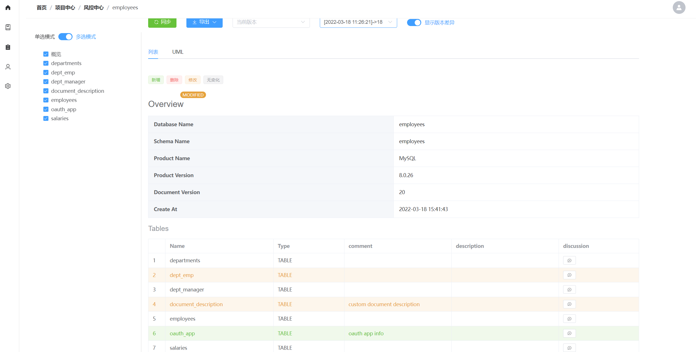
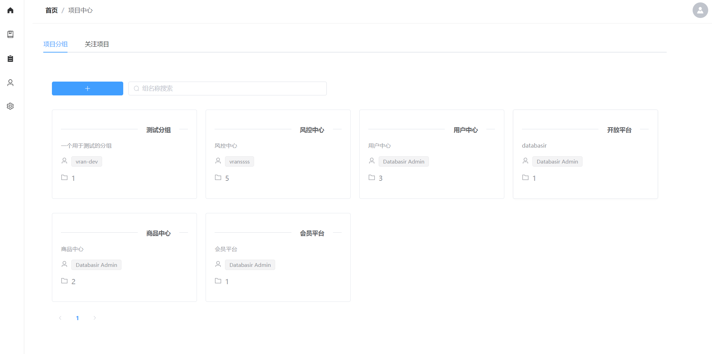
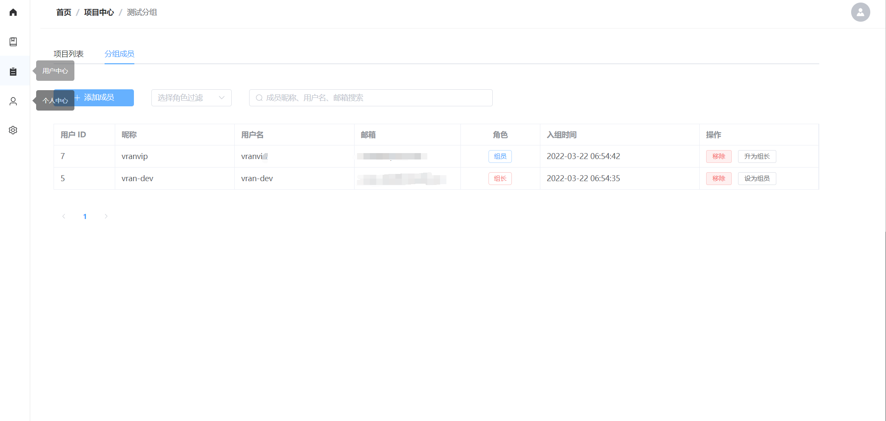
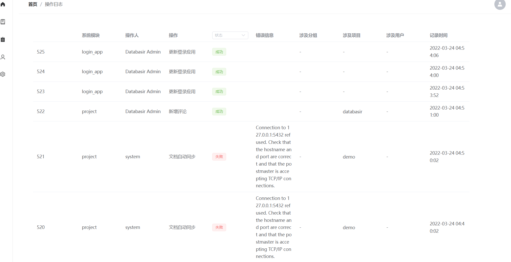

背景
在软件行业，API 文档的自动化有着非常广泛而成熟的方案，但数据库模型文档的自动化却还是一片蓝海，我曾在网上搜寻良久，但并没有找到一款能同时满足我以下需求点的产品
- 自动化：基于数据库自动生成文档
- 版本化：文档历史版本回溯，版本差异对比
- 团队化：适应不同团队结构，多样性功能为跨团队协作赋能
- 个性化：给予使用者一定的文档定制能力
鉴于此，我利用业余的时间开发并开源了 这个项目，它专注于数据库文档的管理，核心能力就是上面提到的自动化、版本化、团队化和个性化四点。
如题，如果有更好的产品欢迎留言指出，给我一个奋斗的目标，当然这里也别忘点赞收藏一气呵成 ！
项目地址：https://github.com/vran-dev/databasir
文档地址：https://doc.databasir.com
问题
在进入正题之前，我想先聊一聊在数据库文档维护这个细分场景下，我们平时遇到的一些问题。
一、没有文档
这是最普遍的一个问题，没有人会否认文档对一个团队的价值，但文档的维护成本也经常让人望而却步
二、时间有限，这次就不写文档了
在人力、时间等资源都有限的情况下我们通常会暂时放弃文档的维护而优先完成业务目标（这本无可厚非），长此以往就会导致文档内容与业务模型之间的差异越来越大，即文档失真了。
三、百家齐放，格式标准不统一
每个人对文档的格式标准都有自己的想法，只是团队内部消化的话，大家的容忍度还是很高的，如果涉及跨团队协作的话，一个统一的格式标准能提高内容质量的最低下限。
四、失忆症，忘记补充文档
模型的变更 80% 的场景都是增量变化，比如加个字段、加一张表等，加了字段和表以后如果忘了更新文档就会造成前面提到的文档失真，但这非刻意为之，更类似于失忆症，根本原因与第二点不同。
现实中的问题远不止这些，但我们可以看看 Databasir 面对这些场景给出的答案，下面就进入 Show time 吧。
自动化，文档的事儿你不用操心
Databasir 基于 JDBC 实现了对数据库表、列、索引、外键等结构的解析，通过解析后的元数据再自动生成标准化的文档内容，从而替代了人工输出文档这种传统方式，节省人力的同时又降低了错误率。
目前 Databasir 生成的文档内容包含以下信息
- 表信息
- 列信息
- 索引信息
- 外键信息
- 触发器信息（仅 Mysql 支持）
文档页面的布局采用了经典的两栏布局，左侧显示所有的表信息，右侧显示文档的详细内容，如下图所示
到这儿还算不上自动化，只能算是半自动化，因为每次模型结构有变更的话还需要手动再同步一下，如果忘了同步就会造成前面提到的文档失真问题。
为了完全的自动化，Databasir 提供了定时自动同步机制，用户可以通过 cron 表达式设置同步时间。
下图展示了定时同步的配置页面
系统会根据配置的时间定时检查模型是否有变更，如果有变更的话就会更新并生成一个新的文档版本，并通过邮件的形式将变更内容通知到相关方。
除了标准的文档内容以外，Databasir 还支持 UML 格式文档生成，如果业务模型有使用到外键，那 UML 之间还能自动根据外键关系生成关联箭头。
版本化，内容变更一目了然
文档版本化可以让我们将文档轻松的回溯到任意指定存档点，在 Databasir 中版本号目前是一个递增的数字，数字越大代表版本越新。
在同步文档时检测到模型有变更才会创建新的版本号，这里的检测使用到了自研的 DIFF 引擎，目前支持以下内容的变更检测
- 数据库信息，比如版本号、产品切换
- 表信息，基于名称比对其他字段的变更，比如注释变更
- 列信息，基于名称比对其他字段的变更，比如类型变更，注释变更
- 索引信息，基于名称比对其他字段的变更，比如关联列变更
- 触发器信息，基于名称比对其他字段的变更
- 外键信息，基于名称比对其他字段的变更，比如关联列变更
下图展示了版本的切换功能
得益于自研的 DIFF 引擎，Databasir 的文档内容可以实现任意版本的差异对比。
在文档页面启用显示版本差异开关，然后选择要对比的旧版本
再看一眼上图，文档内容通过三个高亮颜色来区分差异类型
- 绿色：表示新增的内容
- 红色：表示被删除的内容
- 黄色：表示被修改的内容
比如下图我选择了一个版本号为 18 的内容与当前版本做对比，系统提示有以下变更内容
- dept_emp 表被修改
- document_description 被修改
- oauth_app 是新增的表

表具体的修改内容，可以在表内容展示位置查看，如下图就展示了 document_description 的具体变更内容
注意黄色的 content 字段由两行组成，其中高亮黄色标识是当前版本的信息，灰色的是旧版本的信息。
团队化，该有的都有了
既然是面向团队的文档管理产品，那么自然就得考虑团队通常需要的功能
- 权限
- 协作
- 系统集成
- 审计
先说权限， Databasir 的基本理念是开放，即所有合法的用户都应该有权限查看团队的文档，这样做可以保证信息的价值最大化，避免孤岛效应。
为此，在 Databasir 中将用户分为四种角色
- 普通用户：即能登录系统的用户，能查看所有分组和所有文档
- 组员：某个分组的普通成员，拥有所属分组的所有读权限，部分写权限
- 组长：分组的负责人，拥有所属分组的所有权限
- 系统管理员：拥有系统最高权限


而在协作方面，文档内容支持针对表、列、索引进行跨团队的讨论
系统集成方面，Databasir 支持 Github / Gitlab 的 OAuth2 登录配置，仅需简单的配置即可

操作审计方面，Databasir 支持完整的系统日志查看

个性化，20% 的需求也满足
程序员对功能的要求是最为挑剔的，既要简单又不能复杂，在这方面 Databasir 尽管不能做到 100% 满意，那也是为这 20% 的需求付出了 80% 的努力。
第一个个性化的能力就是数据库类型的扩展。
Databasir 为 Mysql 和 Postgresql 两款数据库提供了开箱即用的配置，但这并不代表其他数据库就不能用了，理论上 Databasir 是支持所有拥有 JDBC 驱动的数据库类型的，比如常见的
- sqlserver
- oracle
- h2
- …
扩展它们只需要简单的图形化配置即可，如下图所示
用户可以在 Maven 仓库找到对应的数据库 JDBC 驱动地址填进表单，Databasir 负责下载并动态加载驱动去连接数据库。
注意哦，由于某些众所周知的原因，驱动的下载地址请尽量选择国内的公共镜像仓库，比如阿里云或企业自建的私库。
除了数据库的扩展外，Databasir 也努力支持为文档内容进行自定义，比如文档内容中的表格头默认都是英文字段显示，如下

这些你都可以通过模板进行编辑，下图就展示了将表头的英文替换成了中文，未来将还会支持字段的隐藏与展示
保存以后再次查看文档，所有的表头就是我们自己设置的中文名称了，而且导出的文档文件也同样生效
未来规划
由于时间和精力有限，Databasir 目前尚有许多功能正在规划之中，短期内会着重关注以下几点
- 提供更多的事件通知，比如被加入分组、成为组长等
- 提供文档内容自定义程度，比如字段的展示与隐藏，字段值自定义等
- 丰富文档文件导出格式，比如 Excel、DOC、PDF 等
- 项目质量，补充足够的单元测试
结语
文档的重要性是毋庸置疑的，随着时间线的拉长，它的价值回报会越来越高，但对于初创团队来说生存才是第一要务，短期的高成本与低收益让团队不得不做出暂时放弃维护文档的决策，而 Databasir 的目标就是要解决这个矛盾点，在占用极低资源的情况下让团队不仅能活在当下，还能立足未来。
如果你对这个产品有兴趣，请在 Github 点击 star 持续关注发展
Github：https://github.com/vran-dev/databasir
文档地址：https://doc.databasir.com
项目反馈：https://github.com/vran-dev/databasir/issues
如果你有更好的建议，也可以通过公众号私信反馈
公众号：vran
二维码：